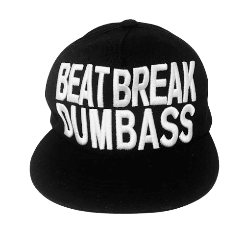

Beat Break Dumbass Snapback
|  |
Brand:No brand. Web Documentation:
|
2025.12.09A cap commonly wholesaled or seen circulating in Singapore, Japan, Dubai, and Thailand. Not at all rare to find. I've seen variations of this snapback. Some are in pink, red, white, pinstriped, floral, or even have a fleece crown. The crown embroidered "Beat Break Dumbass" stays consistent with each hat. Worn in homage to another online donkey. |